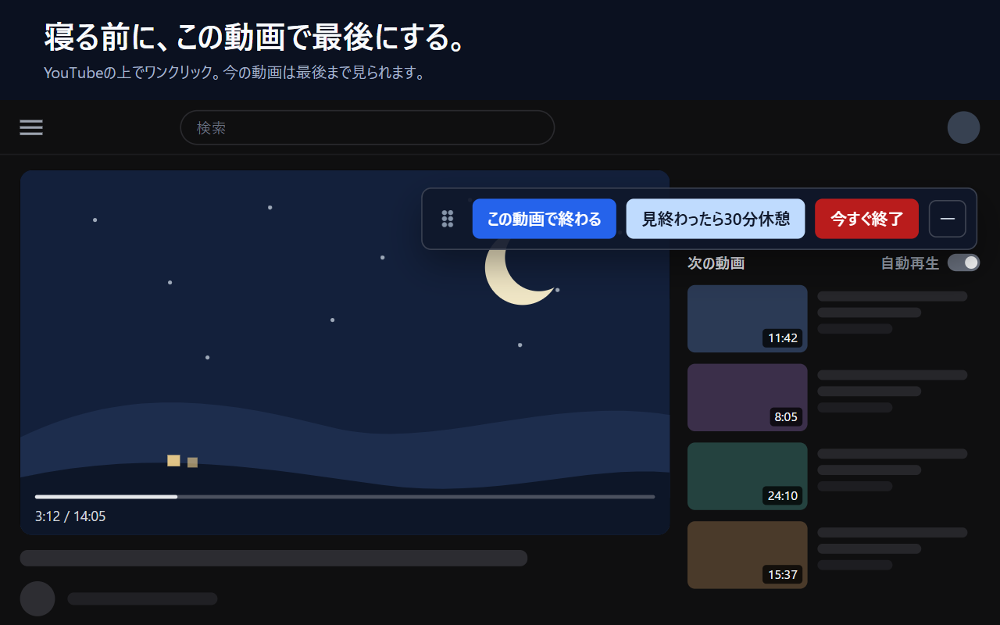
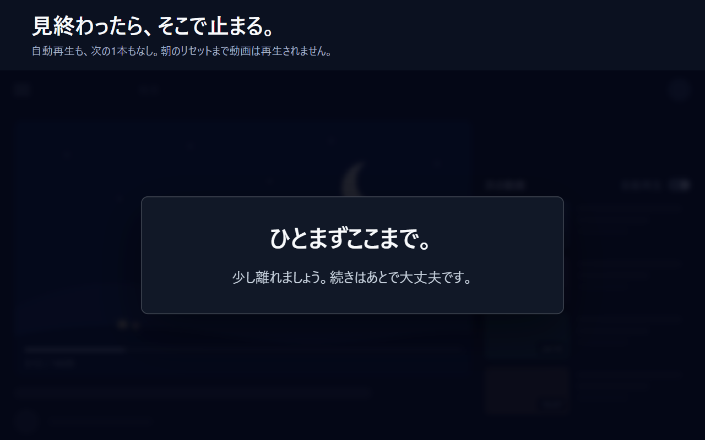
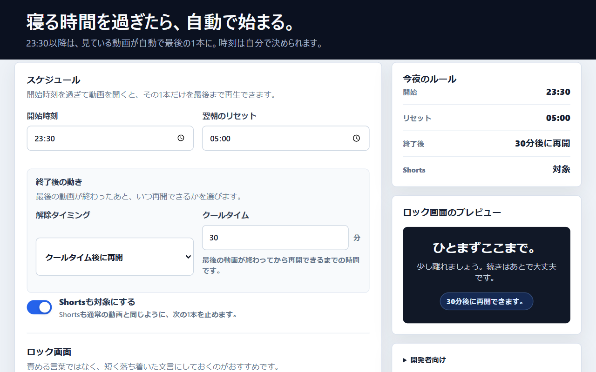

寝る前のYouTubeを、この動画で終わりにする。
「この動画で終わる」は、YouTubeのスリープタイマーとして使える無料のChrome拡張です。今見ている動画は最後まで見られて、見終わったらそこで止まります。自動再生も、次の動画もありません。
Chromeに追加（無料）パソコンのChrome用です。アカウント登録、アクセス解析、外部サーバーへの送信はありません。
寝る前にYouTubeを止める方法
-
1. 最後の1本を決める
動画の画面で「この動画で終わる」を押します。今の動画はそのまま最後まで見られます。

-
2. 見終わったら、そこで止まる
次の動画の代わりに、落ち着いたロック画面が出ます。そのあとは短い休憩（初期値は30分）で再開するか、翌朝のリセット（初期値は5:00）まで止めておくかを選べます。

-
3. 寝る時間を過ぎたら、自動で始まる
寝る時間（初期値は23:30）を決めておくと、その時刻を過ぎたときに再生中の動画が、押し忘れても自動で最後の1本になります。

自動再生をオフにするだけでは足りない理由
YouTubeの自動再生をオフにすると、次の動画が勝手に始まることはなくなります。でも夜遅くは、横に並んだおすすめをつい押してしまいがちです。
「この動画で終わる」は、選んだ動画のあとでYouTubeそのものを止めます。ほかのタブでも止まり、動いている間は設定も変えられないので、その場の勢いで解除できません。
よくある質問
- 無料ですか。
- はい、無料です。
- YouTubeが見られなくなりますか。
- いいえ。やめると決めるまでは、普段どおり見られます。働くのは、自分で選んだ最後の1本のあとだけです。
- すぐにやめたいときは。
- 「今すぐ終了」を押します。休憩を挟みたいときは「見終わったら30分休憩」を押します。
- YouTubeショートは。
- 通常の動画と同じように止めます。オフにもできます。
- どんな情報を集めますか。
- 何も外へ送りません。設定とロックの状態はブラウザの中だけに保存します。動くのはyoutube.comの上だけで、使う権限はstorageだけです。
- スマホでも使えますか。
- いいえ。パソコンのChrome用の拡張で、スマホのYouTubeアプリは変わりません。